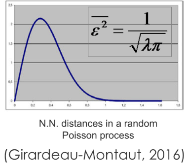
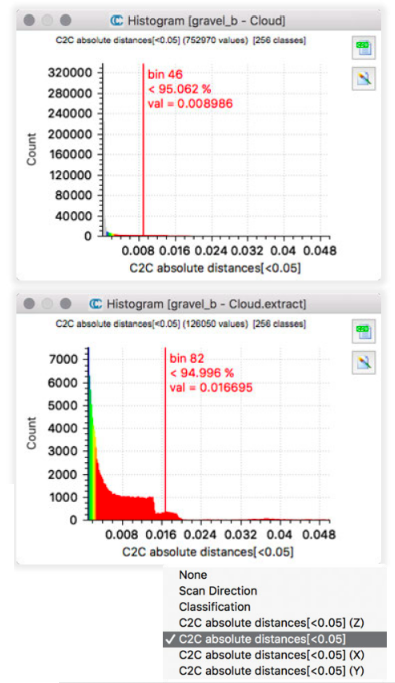
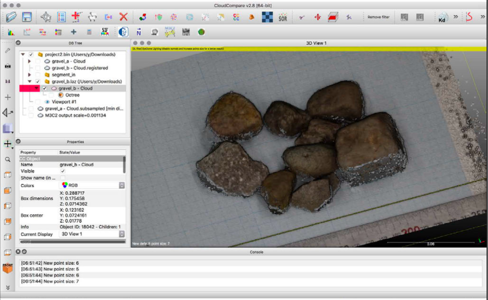
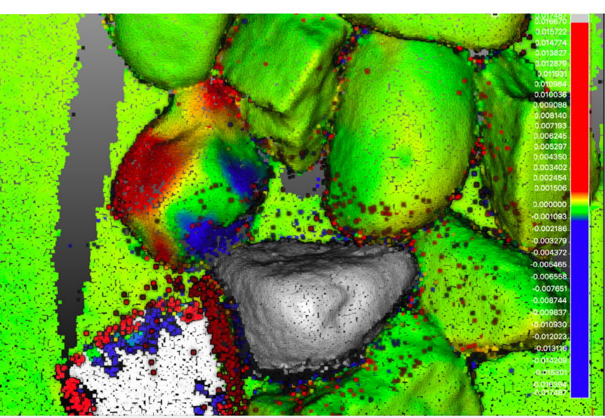

距離計算
点群間距離 cloud-to-cloud distances
- 二つの点群を選択（Shift+クリック）
- Tools > Distances > Cloud/Cloud Dist.
- gravel_aを基準（Reference）に ←Swap
- パラメータ設定
- max. distance = 0.05 m
- split X, Y,and Z
components: YES - → « Compute »
- → OK


点群間距離の算出方法 C2C distance
- デフォルトでは、比較される点群の各点について、基準点群の最近隣の点までの距離が算出される
- →対称的ではない
＝基準と比較を入れ替えると結果も若干異なる
- →対称的ではない

C2C distances のコンセプト
- 基準となる点群が充分に高密度であれば、比較点群で算出される最近隣の点との距離は、実際の距離に近くなる
- 理論：TLSによる点群はポアソン分布に従う
- 誤差は点群密度に依存する
- 基準点群は高密度である必要がある
- 基準点群は比較点群の領域を充分にカバーする必要がある

基準点群が高密度でない場合は？
- "Local modeling"
基準点群を補間（補完）するモデルを生成

距離のヒストグラム表示
- gravel_bを選択、ヒストグラムを表示
- Edit > Scalar fields > Show histogram
- →<1 mm の値に集中
- 余分な値を除外
- Edit > Scalar fields > Filter by value
- [0.001 0.05] >> Export
- 出力した点群でSFのヒストグラムを表示
- プロパティのカラースケールで色変更可能
- X, Y, Z各方向の値（Split有効時）

M3C2プラグイン

M3C2距距離離
- 二つの点群を選択（Shift+クリック）
- Plugins > M3C2 distance
- パラメータ設定
- Cloud #1: gravel_a, Cloud #1: gravel_b
- “Guess params”
- subsample cloud #1: 0.0004 (= 0.4 mm)
- Registration error: 0.001 (= 1 mm)
- Normals: default

M3C2距離 gravel_a

M3C2距離 gravel_b

M3C2距離 M3C2 distance output


M3C2距離 normal dip [0–90°°]

M3C2距離 normal dip direction [0-360°°]